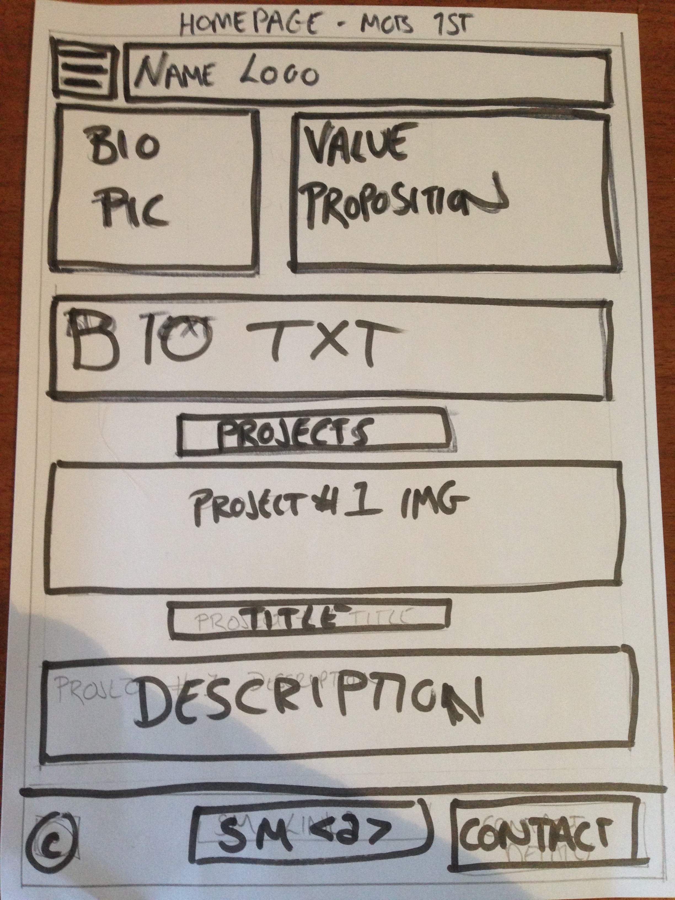
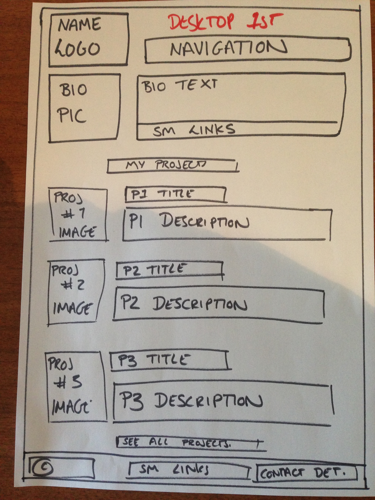
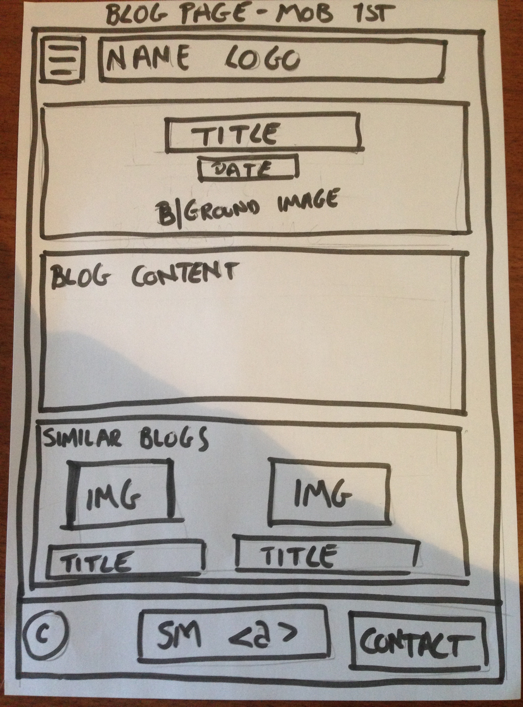
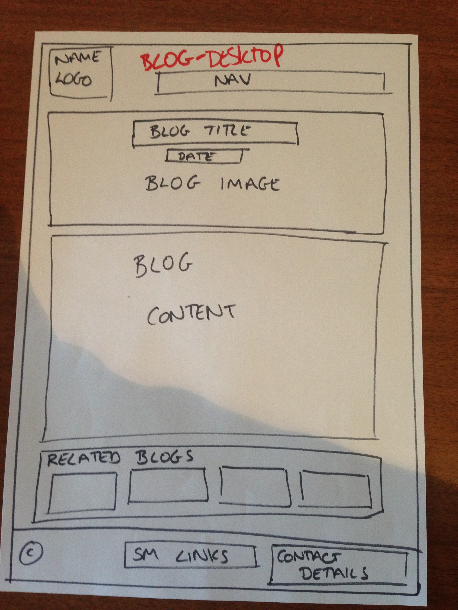

Blogs...
Responsive Web Design
Responsive Web Design involves re-sizing the elements and adjusting the layout of a webpage, depending on the size of screen it is being viewed on. This is particularly important, now more than ever, because of the large number of internet-accessible devices available and the wide variation of their screen sizes. What looks good on a desktop computer will not look good on a mobile device without adjusting the formatting.
Responsive web design uses a variety of page layouts designed to suit a range of different screen sizes. The developer can include all the variations in the original code and the browser will then automatically adjust the page depending on the size of the screen. Designers are choosing to tackle this multiple layout approach, Mobile First.
Mobile First means exactly what it says: When designing multiple page layouts for the same site - start with mobile-phone sized first. This is the smallest screen size that needs to be considered and so it makes you think about what are the most important elements to fit on the page. It is alot easier to start small and then add content and spread content around as you grow, rather than starting big and then trying to squeeze all the content in and end up having to get rid of half of it. There are also other design and code-ey reasons why mobile first makes alot of sense, but for now, just remember - Mobile First!
To assist developers in building responsive websites there are many different frameworks available. A framework is a package made up of ready-made blocks code to help developers build sections of websites and software programmes. Think of it as when a house is built, the builders don't make their own bricks, mould their own windows or weave their own carpets; they have specialists who take care of these things. Frameworks are providers of bricks, windows and carpets of code that developers can use to build their digital houses.
As with everything (except chocolate), frameworks have a number of advantages and disadvantages:
- ✔ Quicker to build site
- ✔ Easy to use
- ✔ Provide solutions to common problems
- ✔ Work on a wide range of browsers
- ✔ Can learn from their methodology
- ✘ Mixes coding languages
- ✘ Often have to load more code than the site needs
- ✘ You don’t learn to do it from scratch yourself
The final topic I want to breifly talk about is wireframing. Wireframing is the practice of drafting simple design templates of how you want the important elements to sit on the page. Wireframes do not to include any actual content, style or imagery; they are simply there to give the page basic structure. To give you a better idea of what I am talking about, here are a few wireframes examples for my forthcoming re-design of this very website.
   Cheers,